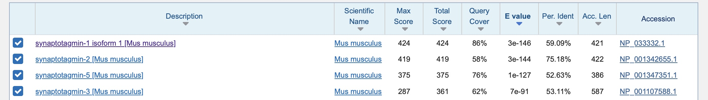

Find a Gene Project Q1-Q4
Find a Gene
[Q1] Tell me the name of a protein you are interested in. Include the species and the accession number. This can be a human protein or a protein from any other species as long as it’s function is known.
Name: Synaptotagmin-1, isoform 1
Accession: NP_001285568
Species: Drosophila melanogaster (flies)
[Q2] Perform a BLAST search against a DNA database, such as a database consisting of genomic DNA or ESTs. The BLAST server can be at NCBI or elsewhere. Include details of the BLAST method used, database searched and any limits applied (e.g. Organism).
Method: blastp search against mus musculus (mice) proteins
Database: RefSeq select proteins (refseq_select)
Organism: Mus Musculus (Taxid: 10090)
Chosen match: Accession NP_033332.1, a 421 base pair clone from Mus musculus. See below for alignment details.

Alignment details:
synaptotagmin-1 isoform 1 [Mus musculus]
Sequence ID: NP_033332.1 Length: 421 Number of Matches: 1
| Score | Expect | Method | Identities | Positives | Gaps |
|---|---|---|---|---|---|
| 424 bits(1090) | 3e-146 | Compositional matrix adjust. | 247/418(59%) | 303/418(72%) | 12/418(2%) |
Query 60 AASQRIAQVESTTRSATTEAQESTTTAVPVIKKIEHVGEVVTEVIAE--RTGLPTWGVVA 117
+AS+ A T AT +T A P K + ++ + + E + LP W ++A
Sbjct 3 SASRPEALAAPVTTVATLVPHNATEPASPGEGKEDAFSKLKQKFMNELHKIPLPPWALIA 62
Query 118 IIILVFLVVFGIIFFCV-----RRFLKKRRTKDGKGKKGVDMKSVQLLGSAYKEKP--DM 170
I I+ L+V F CV + K++ K+ GK ++MK V+ LG K++ D
Sbjct 63 IAIVAVLLVVTCCF-CVCKKCLFKKKNKKKGKEKGGKNAINMKDVKDLGKTMKDQALKDD 121
Query 171 EELTENAEEGDEEDKQSEQKLGRLNFKLEYDFNSNSLAVTVIQAEELPALDMGGTSDPYV 230
+ T + ++E+ + E+KLG+L + L+YDF +N L V +IQA ELPALDMGGTSDPYV
Sbjct 122 DAETGLTDGEEKEEPKEEEKLGKLQYSLDYDFQNNQLLVGIIQAAELPALDMGGTSDPYV 181
Query 231 KVYLLPDKKKKFETKVHRKTLSPVFNETFTFKSLPYADAMNKTLVFAIFDFDRFSKHDQI 290
KV+LLPDKKKKFETKVHRKTL+PVFNE FTFK +PY++ KTLV A++DFDRFSKHD I
Sbjct 182 KVFLLPDKKKKFETKVHRKTLNPVFNEQFTFK-VPYSELGGKTLVMAVYDFDRFSKHDII 240
Query 291 GEVKVPLCTIDLAQTIEEWRDLVSVEGEGGQEKLGDICFSLRYVPTAGKLTVVILEAKNL 350
GE KVP+ T+D EEWRDL S E E QEKLGDICFSLRYVPTAGKLTVVILEAKNL
Sbjct 241 GEFKVPMNTVDFGHVTEEWRDLQSAEKEE-QEKLGDICFSLRYVPTAGKLTVVILEAKNL 299
Query 351 KKMDVGGLSDPYVKIAIMQNGKRLKKKKTSIKKCTLNPYYNESFSFEVPFEQIQKICLVV 410
KKMDVGGLSDPYVKI +MQNGKRLKKKKT+IKK TLNPYYNESFSFEVPFEQIQK+ +VV
Sbjct 300 KKMDVGGLSDPYVKIHLMQNGKRLKKKKTTIKKNTLNPYYNESFSFEVPFEQIQKVQVVV 359
Query 411 TVVDYDRIGTSEPIGRCILGCMGTGTELRHWSDMLASPRRPIAQWHTLKDPEETDEIL 468
TV+DYD+IG ++ IG+ +G TG ELRHWSDMLA+PRRPIAQWHTL+ EE D +L
Sbjct 360 TVLDYDKIGKNDAIGKVFVGYNSTGAELRHWSDMLANPRRPIAQWHTLQVEEEVDAML 417[Q3] Gather information about this "novel" protein. At a minimum, show me the protein sequence of the "novel" protein as displayed in your BLAST results from [Q2] as FASTA format (you can copy and paste the aligned sequence subject lines from your BLAST result page if necessary) or translate your novel DNA sequence using a tool called EMBOSS Transeq at the EBI. Don't forget to translate all six reading frames; the ORF (open reading frame) is likely to be the longest sequence without a stop codon. It may not start with a methionine if you don't have the complete coding region. Make sure the sequence you provide includes a header/subject line and is in traditional FASTA format.
Chosen sequence:
>NP_033332.1 synaptotagmin-1 isoform 1 [Mus musculus]
MVSASRPEALAAPVTTVATLVPHNATEPASPGEGKEDAFSKLKQKFMNELHKIPLPPWALIAIAIVAVLL
VVTCCFCVCKKCLFKKKNKKKGKEKGGKNAINMKDVKDLGKTMKDQALKDDDAETGLTDGEEKEEPKEEE
KLGKLQYSLDYDFQNNQLLVGIIQAAELPALDMGGTSDPYVKVFLLPDKKKKFETKVHRKTLNPVFNEQF
TFKVPYSELGGKTLVMAVYDFDRFSKHDIIGEFKVPMNTVDFGHVTEEWRDLQSAEKEEQEKLGDICFSL
RYVPTAGKLTVVILEAKNLKKMDVGGLSDPYVKIHLMQNGKRLKKKKTTIKKNTLNPYYNESFSFEVPFE
QIQKVQVVVTVLDYDKIGKNDAIGKVFVGYNSTGAELRHWSDMLANPRRPIAQWHTLQVEEEVDAMLAVK
KName: synaptotagmin-1 isoform 1 [Mus musculus] Species:
Mus musculus
Eukaryota; Metazoa; Chordata; Craniata; Vertebrata; Euteleostomi;
Mammalia; Eutheria; Euarchontoglires; Glires; Rodentia; Myomorpha;
Muroidea; Muridae; Murinae; Mus; Mus.[Q4] Prove that this gene, and its corresponding protein, are novel. For the purposes of this project, "novel" is defined as follows. Take the protein sequence (your answer to [Q3]), and use it as a query in a blastp search of the nr database at NCBI.